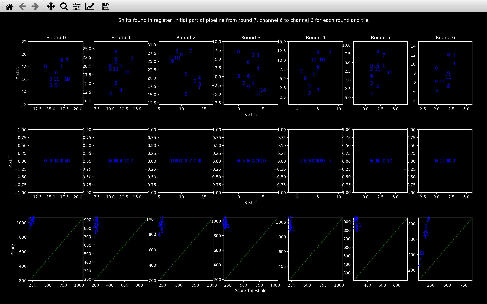
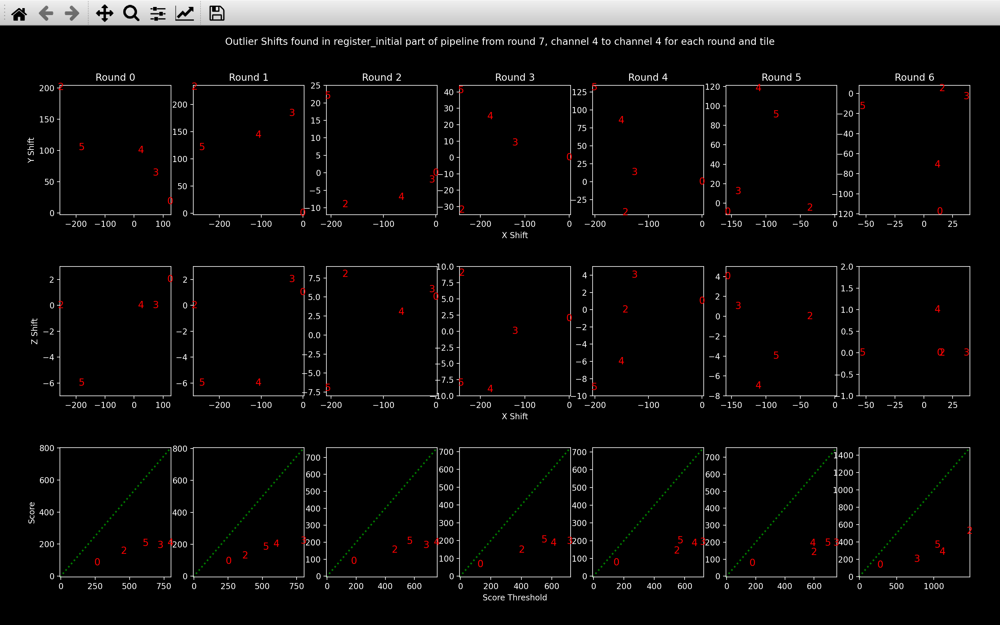
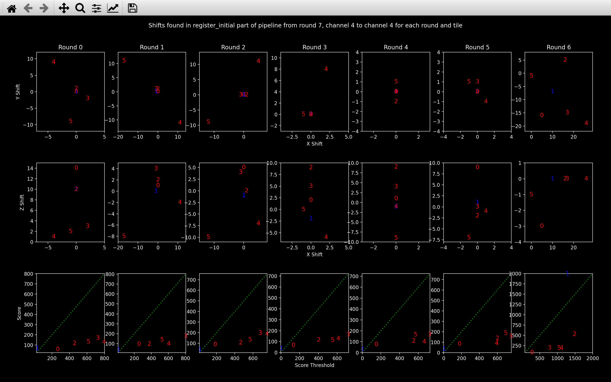

Register Initial
The register initial step of the pipeline uses the point clouds
added to the Notebook during the find_spots step
to find the shift between the reference round and each imaging round for every tile.
The \(yxz\) shift to tile \(t\), round \(r\) is saved as nb.register_initial.shift[t, r]. This shift
is then used as a starting point for finding the affine transforms in the
register step of the pipeline
to all channels of tile \(t\), round \(r\).
The register_initial NotebookPage is added to the
Notebook after this stage is finished.
Shift
The channel used for finding the shifts is specified by \(c_{shift}\) = config['register_initial']['shift_channel'].
If it is left blank, it will be set to \(c_{ref}\) (nb.basic_info.ref_channel). This channel
should be one with lots of spots and if an error
is hit, it may be worth re-running with a different value
of this parameter.
So, for tile \(t\), round \(r\), we find the shift between \(r_{ref}\)/\(c_{ref}\) and \(r\)/\(c_{shift}\).
The function to compute these shifts is exactly the same as the one used in the stitch section of the pipeline and the parameters in the register initial section of the config file do the same thing as the corresponding parameters in the stitch section. A few details are different though, as explained below.
Initial range
The difference to the stitch case is that config['register_initial']['shift_min'] and
config['register_initial']['shift_max'] are always used. We expect the shift between rounds to be quite
small hence the default values, which perform an exhaustive search centered on 0 in
each direction with a range of 200 in \(y\) and \(x\) and a range of 6 in \(z\).
Updating initial range
We assume that the shifts to a given round will be approximately the same for all tiles. So, after we have found
at least 3 shifts to a round which have score > score_thresh, we update our initial exhaustive search range
to save time for future tiles. See the example
in the stitch section for how the update is performed.
Amend low score shifts
This is very similar to the stitch case, but the names of the variables saved to the Notebook are slightly different:
After the shifts to all rounds for all tiles have been found, the ones with score < score_thresh are
amended.
If for round \(r\), tile \(t\), the best shift found had a score < score_thresh,
the shift and score are saved in the notebook as nb.register_initial.shift_outlier[t, r] and
nb.register_initial.shift_score_outlier[t, r] respectively.
The shift is then re-computed using a new initial exhaustive search range
(saved as nb.register_initial.final_shift_search). This range is computed using the
update_shifts function to centre
it on all the shifts found to round \(r\) for which score > score_thresh.
For this re-computation, no widening is allowed either. The idea behind this,
is that it will force the shift to be within the range we expect based on the successful shifts.
I.e. a shift with a slightly lower score but with a shift
more similar to the successful shifts is probably more reliable than a shift with
a slightly higher score but with a shift significantly different from the successful ones.
The new shift and score will be saved in nb.register_initial.shift[t, r] and
nb.register_initial.shift_score[t, r] respectively.
Error - too many bad shifts
After the call reference spots step,
check_shifts_register
will be run.
This will produce a warning for any shift found with score < score_thresh.
An error will be raised if the fraction of shifts with score < score_thresh exceeds
config['register_initial']['n_shifts_error_fraction'].
If this error does occur, it is probably worth looking at the Viewer and
debugging plots to see if the shifts found
looks good enough to use as a starting point for the iterative closest point algorithm
or if it should be re-run with different configuration
file parameters (e.g. different config['register_initial']['shift_channel'] corresponding to a channel
with more spots, smaller config['register_initial']['shift_step'] or larger
config['register_initial']['shift_max_range']).
Debugging
There are a few functions using matplotlib which may help to debug this section of the pipeline.
To view how the shift matches up the point clouds, an analogous function to
view_stitch_overlap
is view_icp, which is explained
in the next step of the pipeline. The register stage of the pipeline does
not need to have been run to use this function though.
view_register_shift_info
The view_register_shift_info function
plots the shifts to all tiles of a given round on the same plot
(there are 3 plots for each round).
This allows you to see if they are similar, as we expect or if there are some outliers.
It also includes a plot of score vs score_thresh for each round:

In this case, all the shifts seem reasonable as the top two plots show quite a small range
and the bottom plot shows score > score_thresh for every shift (blue numbers are all above the green line).
If a shift had score < score_thresh, it would be shown in red in each of the three plots
for that direction.
The numbers refer to the tile.
Viewing outlier shifts
The shifts saved as nb.register_initial.shift_outlier can be viewed by calling
view_register_shift_info(nb, True).
The example below shows the difference between the outlier shifts and the final shifts (nb.register_initial.shift)
saved for a data set which did not work well.


Clearly from the top plot, the range of shift is much smaller than the range of shift_outlier, as we
expect from the reduced range of the exhaustive search to find these.
view_register_search
The view_register_search function is exactly the same
as view_stitch_search.
Pseudocode
This is the pseudocode outlining the basics of this step of the pipeline. For more detailed pseudocode about how the best shift is found, see the shift section.
r_ref = reference round
c_ref = reference round
c_shift = config['register_initial']['shift_channel']
spot_yxz[t, r, c] = yxz coordinates for spots detected on tile t,
round r, channel c.
for r in use_rounds:
for t in use_tiles:
Find best_shift between spot_yxz[t, r_ref, c_ref] and
spot_yxz[t, r, c_shift].
If 3 or more shifts to round r with score > score_thresh:
Update search range around these shifts.
Amend shifts with score < score_thresh using new search range for each round.
Add shifts and debugging info to register_initial NotebookPage.
Add register_initial NotebookPage to Notebook.